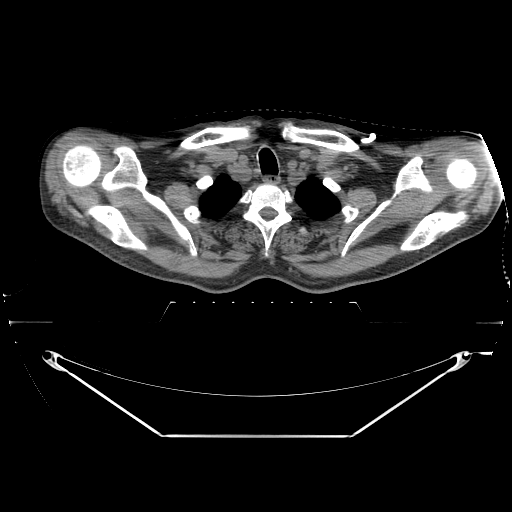
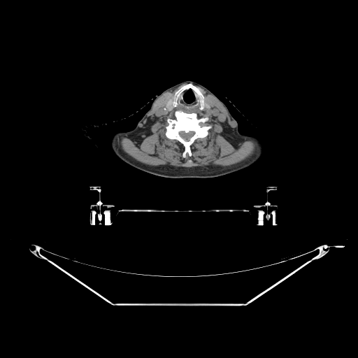
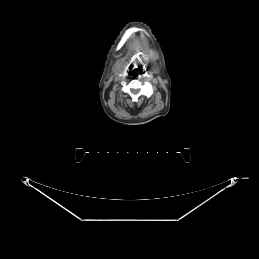
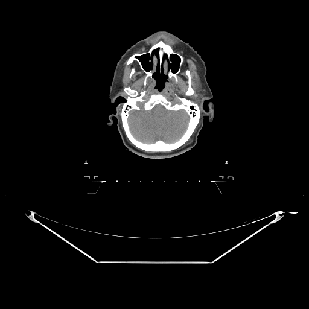

The neck packs vessels, airway, glands, cartilage, and nodes into a small volume, so planning uses thin-slice contrast-enhanced CT, often fused with MRI/PET. Read on a soft-tissue window, the anatomy changes dramatically over just a few centimeters — which is why we work level by level.

Vertebral levels give fast craniocaudal orientation here: hard palate ~C1, hyoid ~C3, thyroid cartilage ~C4–C5, cricoid ~C6.
The pharynx divides into three tiers that map directly onto disease-site definitions:
| Region | Extent |
|---|---|
| Nasopharynx | Skull base to soft palate |
| Oropharynx | Soft palate to hyoid (tonsils, base of tongue) |
| Hypopharynx | Hyoid to cricoid; includes the pyriform sinuses |

The pyriform sinuses are found in which pharyngeal subdivision?
The laryngeal skeleton is a stack of cartilages best appreciated in sequence: the epiglottis, the hyoid bone, the thyroid cartilage, and the cricoid cartilage — the only complete cartilage ring, marking the larynx→trachea and pharynx→esophagus transition.

Which laryngeal cartilage is the only complete ring and marks the pharynx-to-esophagus transition (~C6)?
The carotid sheath is the constant reference on every axial neck slice.

Cervical node levels I–VII are the backbone of head-and-neck target definition — elective nodal volumes are drawn by level. Recognizing the boundaries between levels on axial CT is essential; explore them in the 3D lymphatics tool linked at the end.
Which paired structures lie in the carotid space immediately lateral to the airway?
The neck is semi-rigid and deformable: the cervical spine flexes and extends, and the mandible and shoulders move independently, so verification blends bony and soft-tissue judgment.
Why does head-and-neck verification often need more than a single rigid bony match?
You've read the neck from nasopharynx to thyroid on real CT — the three pharyngeal tiers, the laryngeal cartilages, the carotid/jugular vessels and thyroid — connected it to cervical nodal levels, and seen why deformation makes H&N a bony and soft-tissue verification problem.
Cross-reference: Head & Neck Treatment Planning and the 3D Head & Neck Lymphatics model.